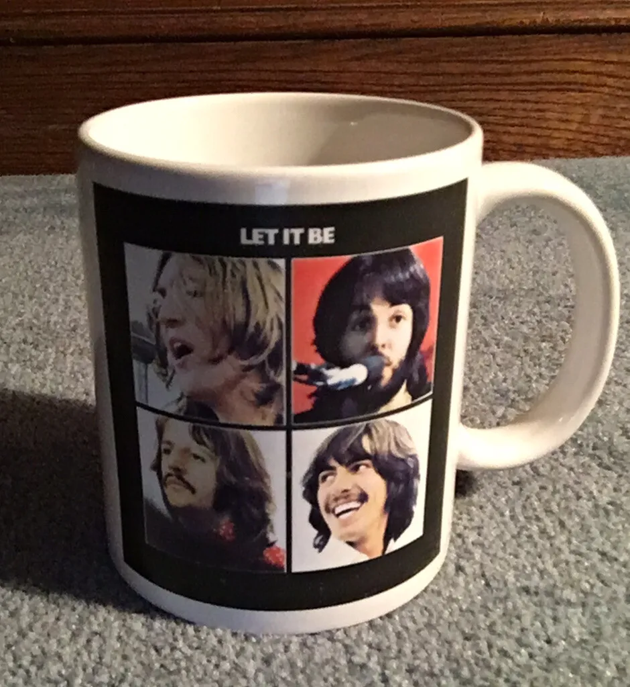
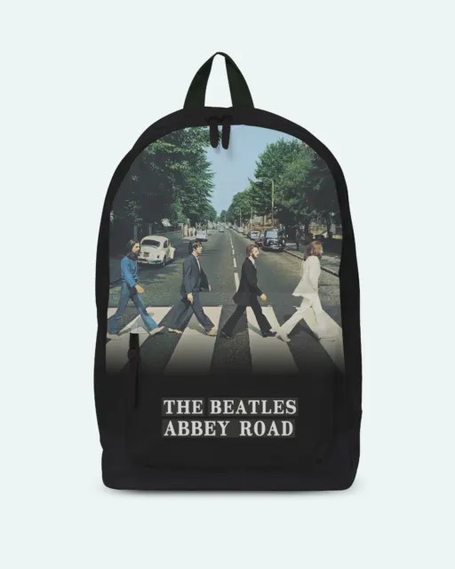
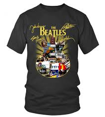

Tache de The Beatles
1099 €

Sac de The Beatles
1099 €

Tshirt de the beatles
14 89 €
L’actualité Beatles est très riche. En effet, même si les Fab Four ne jouent plus ensemble, car la séparation des Beatles remontent à avril 1970, les membres du groupe sont restés très actifs. Si John Lennon et George Harrison sont morts bien trop tôt (John Lennon est mort assassiné, George Harrison est mort d’un cancer), Paul McCartney et Ringo Starr ne cessent de surprendre les admirateurs des Beatles avec une carrière musicale qui brille par la longévité et le talent. Ce sont de vrais légataires de l’Art des Beatles. Yellow-Sub.net, le site francophone dédié aux Beatles. En consultant notre rubrique “News Beatles” vous allez par exemple savoir quelles sont les dates des concerts de Paul McCartney et les futurs lives de Ringo Starr, mais aussi quand sortira le nouvel album de Paul McCartney… Notre Website a aussi pris pour parti de vous parler des proches des Beatles : Stella McCartney, Mary McCartney, Yoko Ono, Dhani Harrison, Olivia Harrison, James McCartney… notre site Beatles évoque donc toutes les dépêches d’actualité des Beatles, et de leurs proches, mais aussi désormais devient un vrai magazine Beatles. Notre volonté, notre objectif est de partager avec vous, gratuitement et de façon bienveillante et passionnée des tranches de vie des Beatles, et se re-mémorer ces moments forts et extraordinaire de cette légende du rock.
Tache de The Beatles
1099 €Sac de The Beatles
1099 €Tshirt de the beatles
14 89 €